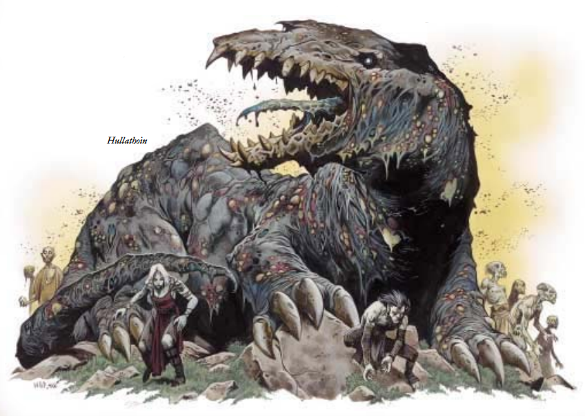

超大型不死生物

| 生命骰： | 16d12（104hp） |
| 先攻： | -1 |
| 速度： | 60英尺 |
| 防御等级： | 27（-2体型，-1敏捷，+20天生），接触7，措手不及27 |
| 基本攻击／擒抱： | +8/+26 |
| 攻击： | 啮咬+17近战 |
| 全力攻击： | 啮咬+17近战及2践踏+14近战及2触手+14近战 |
| 伤害： | 啮咬2d8+10/19―20，践踏1d8+5，触手1d6+5外加毒素 |
| 面宽／触及： | 15英尺/10英尺（触手为20英尺） |
| 特殊攻击： | 残废，散发血妖蝗虫（译者注：下文为散发血妖集群），精通攫抓，精通擒抱，毒素，呵斥不死生物，脓水球发 |
| 特殊能力： | 黑暗视觉60英尺，免疫寒冷，伤害减免15/魔法和银（3e：20/+2），免疫电，快速医疗8，火焰抗力15，灵敏嗅觉，音波抗力15，法术抗力26，不死生物特性 |
| 豁免： | 强韧+7，发射+4，意志+13 |
| 属性： | 力量30，敏捷8，体质―，智力12，感知16，魅力12 |
| 技能： | 平衡+18，攀爬+29，聆听+22，侦察+22，游泳+29 |
| 专长： | 顺势斩，强韧加强，精通重击（啮咬），多重攻击，猛力攻击，武器专攻（啮咬） |
| 地域： | 地表或地底任意 |
| 组织： | 个体 |
| 挑战等级： | 15 |
| 宝物： | 标准 |
| 阵营： | 通常中立邪恶 |
| 进化： | 17―32HD（超大型）；33―45HD（巨型） |
由于偏好黑暗的陆地，腐疮召尸通常于地下遭遇。偏僻的山口，漆黑的沼泽和古老的森林也是这种不死畸兽合适的家园。
腐疮召尸用强壮的四足行走，站立时肩膀离地20英尺高。它只剩头骨的脑袋长了一张无底巨口。但腐疮召尸外表最独特之处还是它灰黑斑驳的躯体如同携带某些令身体消瘦的疾病。发炎、红肿、充满脓液的烂疮以固定频率渗出，覆盖其肉体。嗡嗡作响的昆虫始终环绕它，享受它腐烂的身躯。
腐疮召尸身边几乎总是聚集着五花八门的不死生物群。由于它携带的血妖集群能制造新的吸血衍体，这些衍体是它最常见的不死仆从，但由于腐疮召尸能命令不死生物，它的仆从中也能找到木乃伊、妖鬼、食尸鬼、僵尸、甚至还有魔魂尸和幽魂。
腐疮召尸会说通用语，奇怪的是，它还会说龙语。
致畸（Su）：一只腐疮召尸可以在其触手擒抱受害人后令其畸形而扭曲，当腐疮召尸压制一名对手后，它可以造成正常伤害并尝试令其变得畸形。若通过强韧豁免（DC18），受害者只会受到正常的擒抱伤害。若未通过豁免，受害者还会受1d6魅力伤害。
散发血妖集群（Su）：以一个标准动作，腐疮召尸可以放出一个血妖蝗虫集群来攻击其敌人（血妖蝗虫集群见后文）。这些生物成群生活在腐疮召尸流脓的烂疮内。它们不会攻击腐疮召尸及其仆从。
精通攫抓（Ex）：若腐疮召尸以一次触手攻击命中一个体型至少比它小一级的对手，它会造成正常伤害并以一个自由动作尝试发动擒抱而不会引发借机攻击（擒抱加值+26）。随后，腐疮召尸可以选择正常陷入擒抱，或仅以触手定身敌人（见下文精通擒抱）。在这种情况下，每次成功的擒抱检定都会在连续轮中自动造成触手伤害。它也可以尝试压制对手，一名被压制的对手会受到特殊攻击致畸的影响。
精通擒抱（Ex）：通常，一个进行擒抱而不希望本身陷入擒抱的生物须在擒抱检定上承受-20减值，但腐疮召尸在以触手擒抱时，无需承受减值。它可以以触手正常发动擒抱攻击而无需承在其他攻击上受任何减值，它也不用在防止自己陷入擒抱的擒抱检定中承受-20减值。
毒素（Ex）：腐疮召尸会在每次成功的啮咬或触手攻击时注入它的毒素（强韧DC19无效）。初始及后续伤害相同（1d10力量）。
呵斥不死生物（Su）：腐疮召尸可以如同20级牧师般呵斥或命令不死生物。任何由它携带的血妖集群创造的吸血衍体生物在被唤起时自动视为被命令，尽管它仍受腐疮召尸能命令的不死生物生命骰总数的限制。若新唤起的由蝗虫创造的不死生物将超出腐疮召尸的命令上限，它可以选择放弃对新不死生物的控制或放弃其他不死仆从来将其加入不死军团中。
脓水球发（Ex）：每日一次，腐疮召尸可以从它的无数烂疮中喷发浓水。浓水环会影响腐疮召尸周身30英尺的范围，任何陷入喷发者必须进行一个反射豁免（DC18），否则受到5d6强酸伤害并受到1d6力量伤害。成功的豁免检定可以避免力量伤害并减半强酸伤害。豁免失败者还会陷入恶心10轮。
盲视（Ex）：腐疮召尸不止依靠视觉来了解情况和战斗，它也会利用听觉和嗅觉来判断周围情况。此能力允许它辨别60英尺内的物品和生物。腐疮召尸通常无需侦察或聆听检定就能注意到盲视范围内的生物。
快速医疗（Ex）：腐疮召尸会以每轮5点的速率恢复失去的生命值，快速医疗不能恢复因饥饿、干渴或窒息造成的伤害，它也不会让腐疮召尸失去的部位重新生长或接合。
灵敏嗅觉（Ex）：腐疮召尸能依靠嗅觉侦测接近的敌人，寻找隐藏的对手以及进行追踪。
不死生物特性：腐疮召尸免疫影响心灵效果、毒素、睡眠、麻痹、震慑、疾病、死亡效果、死灵系效果（除非明确说明影响不死生物）、以及任何需要体质豁免的效果，除非该效果也能影响物品。它不受重击、瘀伤、属性伤害、属性吸取或因巨创死亡。腐疮召尸不能被复活，也不能被复生，除非它自己愿意。腐疮召尸拥有黑暗视觉（60英尺）。